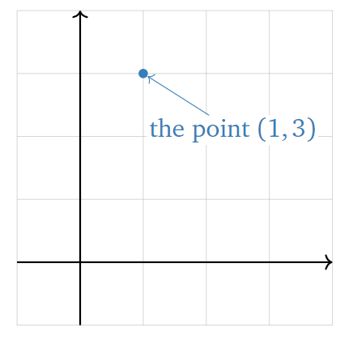
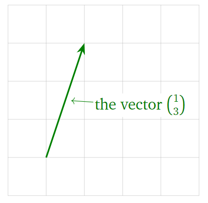
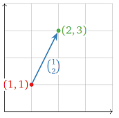
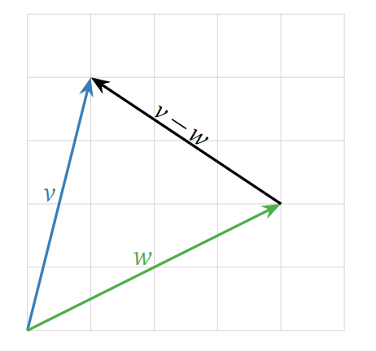
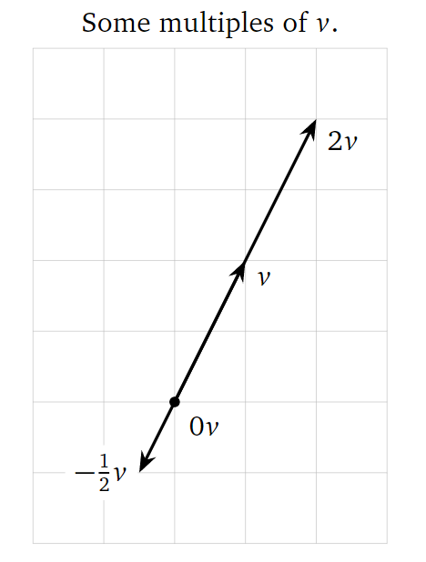

前置知识
理解 \(R^n\) （n维向量空间），标量与向量的区别，知道向量如何运算。
1. \(R^n\) 中的向量
首先从最基本的概念讲起。一个n维向量在几何上有两种解释：一种是它是n维空间里的一个点（point），另一种则是向量（vector），如下图所示。
 
在之后的描述中，除非特别声明，否则默认向量起始于原点。但需要注意的是，这只是为了描述的方便，向量在可以在空间中任意位置，它并不一定要以原点为起点。换句话说，一个向量只由它的长度和方向决定，与其位置无关。
当然，向量也可以表示两个点之间的距离，如下图所示。

2. 向量的运算及其几何表示
向量的相加减结果可由向量间各个维度数值各自相加减得到，如下图所示。

而标量与向量的乘法结果可由标量与向量各个维度数值相乘得到，如下图所示。

所以，从几何角度上看，向量间的线性组合，由各个向量各自的缩放（与标量相乘），再将它们相加得到。